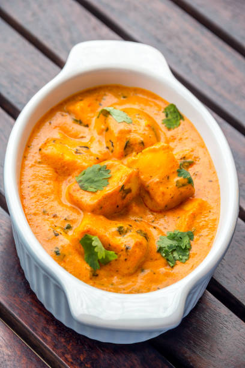

Home

Fig. A rich and creamy bowl of Shahi Paneer
Description:
Shahi Paneer is a rich and creamy North Indian curry made with paneer (Indian cottage cheese), cooked in a luxurious gravy of onions, tomatoes, cream, and nuts.
The word "Shahi" means "royal," and this dish truly lives up to its name with its mildly sweet, aromatic, and flavorful profile.
This dish is commonly served with naan, roti, or rice, and is often reserved for special occasions due to its indulgent ingredients like cream, ghee, and cashews or almonds.
Ingredients
For Gravy:
Paneer (cubed)
Onion (chopped)
Tomatoes (chopped)
Ginger-Garlic paste
Cashews or almonds
Fresh cream
Milk (optional)
Garam masala
Turmeric powder
Red chili powder
Coriander powder
Salt
Sugar
Ghee or oil
Cardamom (optional)
Bay leaf (optional)
Steps:
Step 1: Prepare the Base
Heat ghee or oil in a pan. Add bay leaf and cardamom if using.
Add chopped onions and sauté until golden brown.
Add ginger-garlic paste and cook until raw smell goes away.
Add chopped tomatoes and cook until soft.
Add cashews or almonds and cook for 2-3 minutes.
Let the mixture cool, then blend to a smooth paste using little water.
Step 2: Cook the Gravy
Heat some more ghee or oil in the same pan.
Pour the blended paste and cook for a few minutes.
Add turmeric, red chili, coriander powder, and salt.
Add a little water or milk to adjust the consistency.
Add sugar and mix well.
Step 3: Add Paneer & Finish
Add paneer cubes and let it simmer for 5 minutes.
Add cream and a pinch of garam masala. Mix gently.
Cook for another 2 minutes and turn off the heat.
Garnish with cream or coriander leaves and serve hot.